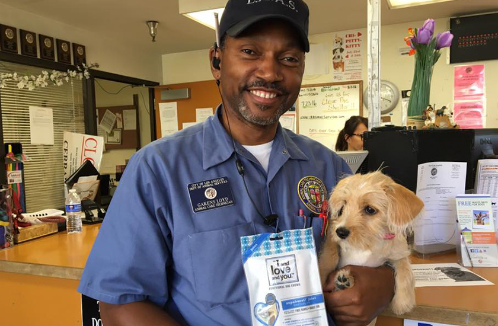
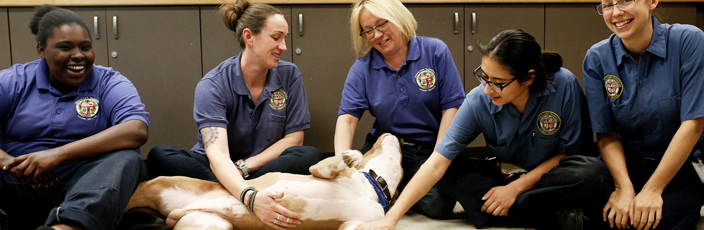

Our Centers are open by appointment only, so you can still foster and adopt a pet. Due to COVID-19 and City Order, our Administrative Offices are temporarily closed to the public.
For general assistance, please call (888) 452-7381. | For assistance with animal licensing, please call (213) 482-9550.

Missions, Visions, And Values
To promote and protect the health, safety and welfare of animals and people. We envision a day when every pet born has a good home and is cared for all its life, when no person is ever endangered by an animal and when all Angelenos are actively engaged in making Los Angeles the most humane city in the nation. We value each employee, volunteer and partner contributing to the professional delivery of excellent customer service and the humane treatment of animals, in an atmosphere of open, honest communication, predicated on our respect for and trust in each other. Our values depict the highest standards of:
Respect – We pledge to treat each person thoughtfully, politely and kindly regardless of rank or relationship.
Trust – We strive to conduct ourselves in an honest, ethical, professional and respectful manner in everything we think, do and say, inspiring confidence in our abilities and our honesty.
Open and Honest Communication – We commit to complete transparency in all forms of communication and to carefully listen to the communications of one another.
Customer Service – We pledge to provide our best service to every customer, whether an internal or an external customer, every time.
Humane Treatment – At all times and in all places, we vow to care compassionately, advocate actively and work tirelessly to insure the best possible environment for all animals.


Our Organization
The Los Angeles Animal Services Department was formed by ordinance in 1947. With the General Manager as executive, the Department is under the control of a Board of Commissioners, with five members appointed by the Mayor, and by the City Council of Los Angeles.
Brenda F. Barnette has been general manager of Los Angeles Animal Services since August 2010. Los Angeles Animal Services is one of the largest municipal shelter systems in the U.S., with six shelters serving approximately 60,000 animals annually and responding to 20,000 emergency calls each year involving animals or people in danger.
Brenda earned the reputation as a positive change manager with over twenty years of success developing financial and human resources to meet and exceed the needs of programs and services. She developed a unique public private partnership with Best Friends Animal Sanctuary that saves Los Angeles well over $3.2 million dollars annually while saving the lives of thousands of companion animals. Together and with the help of animal loving Angelenos, Los Angeles City is on track to meet the life saving mission to re-home all animals entering our LA Animal Services Centers with a 90% live save rate (noses in and noses out).
We believe this is possible. We started in 2010-11 with a 57% live save rate and by end of year 2018 we are at 89.7% live save rate.

Our Stories
The City of Los Angeles Animal Services Department (LAAS) was established 153 years ago. LAAS’s major areas of responsibility are saving the lives of animals that end up at one of our six City shelters, Public Safety and Enforcement of Municipal Code (Article 3:53.00).
LAAS operates six animal shelters and has field staff serving the community. The shelters are award winning facilities that have been built within the past 10-15 years. LAAS is one of the largest municipal shelter systems in the U.S., serving approximately 60,000 animals annually and responding to 20,000 emergency calls each year involving animals or people in danger.
Each shelter has at least one veterinarian as well as Registered Vet Techs to assist. Our veterinary team has training and experience in orthopedic surgery, wildlife, high volume spay/neuter and more.
Our field staff includes a world class Specialized Mobile Animal Rescue Team (SMART)– one of only two in the country, our Animal Control Officers are recognized experts in handling animal cruelty cases, they handle permits and all code enforcement including licensing, spay/neuter, leash laws and more whether they are helping dogs, cats, hawks, alligators, horses, turtles, etc. or the people who love them or fear them.
LAAS is often the leader on progressive animal issues. Los Angeles was the first major city to pass the ban of the use of the elephant bull hook inspiring other cities fall into step, Ringling Brothers began making plans to retire the elephants from circus acts. The earliest declawing legislation began here and is now being considered by New York and beyond. The anti-puppy mill ordinance to prevent the importation of mill bred puppies and kittens began in Los Angeles and cities across the United States are starting to join that movement.
In Fiscal Year 2011-12, our live-save rate for dogs and cats was only 57.8% and as of December 2017 the live-save rate was 91.93% for dogs and 80.11% for cats. This is a total count of noses in and noses out. We still have work to do for sure, and we have been making steady progress during the past six years.
As a covered entity under Title II of the Americans with Disabilities Act, the City of Los Angeles does not discriminate on the basis of disability and, upon request, will provide reasonable accommodation to ensure equal access to its programs, services and activities.